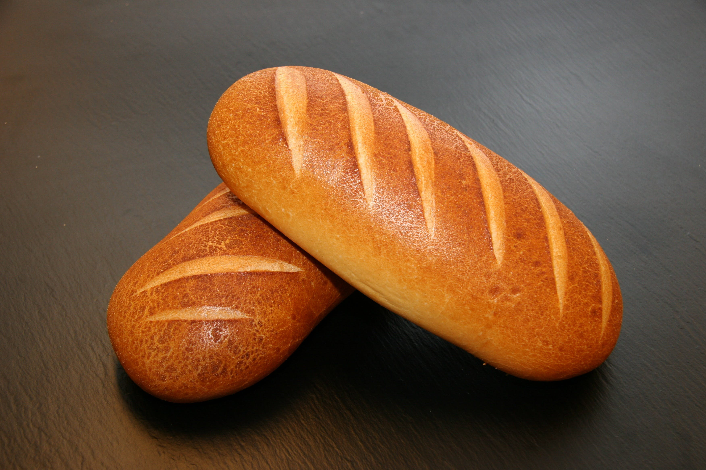
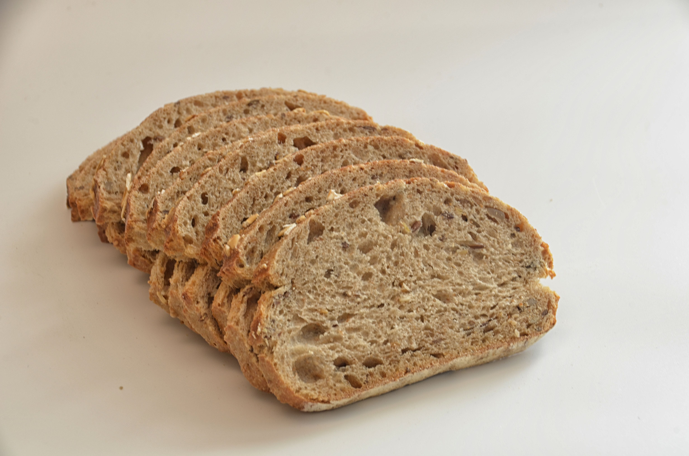
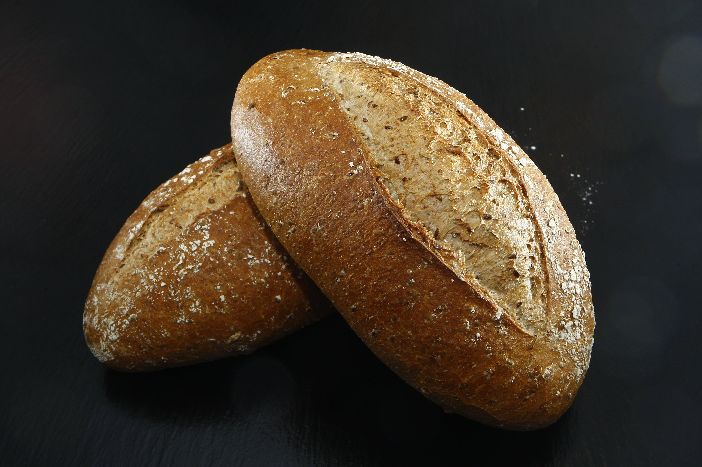

Whiteys and Wheatys

Basic Bitch White Bread
A fragrant masterpiece of golden-brown perfection, this homemade loaf of bread boasts a crust that crackles with each bite, revealing a soft, airy interior with a delightful medley of wheaty aromas.

Sliced Wheat Bread
A fragrant masterpiece of golden-brown perfection, this homemade loaf of bread boasts a crust that crackles with each bite, revealing a soft, airy interior with a delightful medley of wheaty aromas.

Turdy Wheaty Bread MMMMMMM
A fragrant masterpiece of golden-brown perfection, this homemade loaf of bread boasts a crust that crackles with each bite, revealing a soft, airy interior with a delightful medley of wheaty aromas.